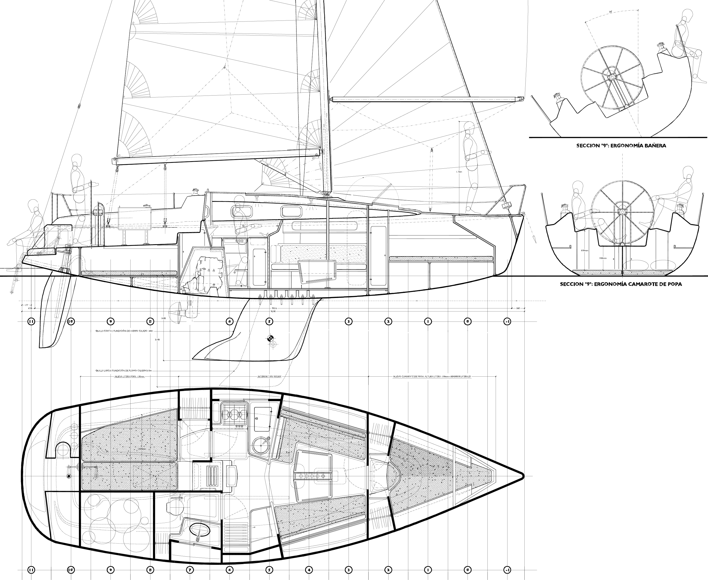
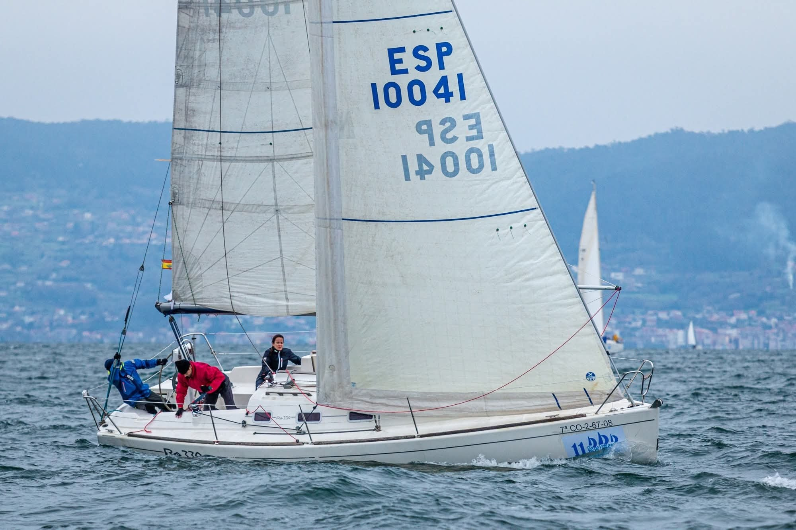

<!DOCTYPE html>
<html lang="es">
<head>
    <meta charset="UTF-8">
    <meta name="viewport" content="width=device-width, initial-scale=1.0">
    
    <title>Ro330 Class</title>
    
    <link rel="icon" type="image/png" href="img/icon.png">
    
    <link rel="preconnect" href="https://fonts.googleapis.com">
    <link rel="preconnect" href="https://fonts.gstatic.com" crossorigin>
    <link href="https://fonts.googleapis.com/css2?family=Montserrat:wght@300;400;600;700&display=swap" rel="stylesheet">

    <link rel="stylesheet" href="css/style.css">
</head>
<script src="js/main.js"></script>
</body>
</html>
<body>

<header>
    <a href="index.html" class="logo">Ro330 CLASS</a>

    <button class="nav-toggle" aria-label="Abrir menú" aria-expanded="false">
        <span class="hamburger-line"></span>
        <span class="hamburger-line"></span>
        <span class="hamburger-line"></span>
    </button>

    <ul class="nav-links">
        <li><a href="index.html">Inicio</a></li>
        <li><a href="competicion.html">Competición</a></li>
        <li><a href="reglamento.html">Reglas de clase</a></li>
        <li><a href="documentacion.html">Documentación</a></li>
    </ul>
</header>

    <main>

    

        <section id="inicio" class="hero">
            <div class="hero-content">
                <h1>Ro330 WORLD CLASS</h1>
                <p></p>
            </div>
        </section>
<section class="container" style="padding-bottom: 20px;">

   <p style="text-align: justify; max-width: 900px; margin: 0 auto; font-weight: 300; font-size: 1.15rem; line-height: 1.7;">
    El objetivo de este sitio es plantear, de manera sencilla y sin pretensiones, la posibilidad de crear una 
    <strong>futura Clase Ro330</strong>. Se trata únicamente de un proyecto <strong>hipotético</strong>, motivado por la 
    <strong>gran abundancia de unidades</strong> en distintas zonas de España y por el interés compartido en aprovechar ese potencial para explorar una clase monotipo.
    <br><br>
    La idea es valorar si podría establecerse un formato de competición accesible, 
    <strong>simple de implementar</strong> y que permita a más armadores participar en igualdad de condiciones. 
    Esta propuesta no busca fijar normas definitivas, sino servir como un punto de partida para 
    quienes deseen reflexionar sobre cómo podría organizarse una futura clase común.
</p>
</section>
        <section id="info" class="container">
            <div class="section-header">
                <h2>El Barco</h2>
            </div>

            <p style="text-align: justify; max-width: 900px; margin: 0 auto; font-weight: 300; font-size: 1.15rem; line-height: 1.7;">
    El Ro330 es uno de los diseños más exitosos de la vela española, con numerosas unidades en activo y una presencia especialmente fuerte en <strong>Galicia</strong> y <strong>Barcelona</strong>. Su amplia difusión, sobre todo en la versión de <strong>quilla corta</strong>, ha impulsado la creación de una clase propia para unificar la competición.
    <br><br>
    Versátil, equilibrado y fiable, el Ro330 funciona igual de bien en crucero que en regata, lo que lo convierte en un barco <strong>accesible</strong>, <strong>muy competitivo</strong> y con un enorme potencial deportivo.
</p>


            <div class="top-layout-grid">
                <div class="layout-image-wrapper top-image-left">
                    
                </div>
                
                <div class="spec-item top-info-right">
                    <h3>Diseño y Especificaciones</h3>
                    
                    <table class="spec-table">
                        <tr>
                            <td>Diseñador</td>
                            <td>Barracuda Yacht Design (Íñigo Toledo)</td>
                        </tr>
                        <tr>
                            <td>Astillero</td>
                            <td>Ronautica Yatchs</td>
                        </tr>
                        <tr>
                            <td>Eslora (LOA)</td>
                            <td>9.50 m</td>
                        </tr>
                        <tr>
                            <td>Manga (Beam)</td>
                            <td>3.25 m</td>
                        </tr>
                        <tr>
                            <td>Calado (Draft)</td>
                            <td>1.66 m</td>
                        </tr>
                        <tr>
                            <td>Desplazamiento</td>
                            <td>3800 kg</td>
                        </tr>
                        <tr>
                            <td>Año</td>
                            <td>2000</td>
                        </tr>
                    </table>
                </div>
            </div> 

            <div class="bottom-full-width-image">
                
            </div>

            <section id="banner-separador" class="banner-separador">
                <div class="banner-inner">
                    
                    
                    
                </div>
            </section>

        </section>

<section id="reglas" class="container alt-bg reglas-mini">
    <div class="section-header">
        <h2>Explora la Clase Ro330</h2>
    </div>

    <div class="intro-grid">
        <!-- REGLAS DE LA CLASE -->
        <div class="intro-card">
            <h3>Reglas de la Clase</h3>
            <p>
                La Clase Ro330 reúne barcos con pequeñas diferencias entre series y configuraciones, por lo que no es posible aplicar un reglamento estrictamente monotipo. Para permitir que la mayoría de unidades existentes puedan competir juntas, la clase adopta normas laxas pero controladas, lo suficientemente amplias como para incluir a todos, pero no tanto como para que aparezcan configuraciones que rompan el equilibrio deportivo.
            </p>
            <a href="reglamento.html" class="cta-button">Ver Reglamento</a>
        </div>

        <!-- COMPETICIÓN -->
        <div class="intro-card">
            <h3>Competición</h3>
            <p>
                La propuesta de competición Ro330 es, por ahora, un proyecto hipotético que explora cómo podría organizarse una flota específica para esta clase. Se estudia la integración en regatas existentes, la posible creación de una clase monotipo y la viabilidad de un circuito propio aprovechando la alta concentración de barcos en determinadas zonas.
            </p>
            <a href="competicion.html" class="cta-button">Ver Competición</a>
        </div>

        <!-- DOCUMENTACIÓN -->
        <div class="intro-card">
            <h3>Documentación Ro330</h3>
            <p>
                Recopilación de planos, esquemas y manuales relacionados con el Ro330: documentación técnica del barco, esquemas de sistemas a bordo y manuales de componentes clave como el motor. Un punto de partida útil tanto para armadores como para tripulaciones que quieran conocer mejor su unidad.
            </p>
            <a href="documentacion.html" class="cta-button">Ver Documentación</a>
        </div>
    </div>
</section>

    </main>

    <footer>
        <p>&copy; 2025 Ro330 Class Association. Sin ningun derecho reservado.</p>
        <p>Diseño conceptual por Anónimo</p>
    </footer>

</body>
</html>
